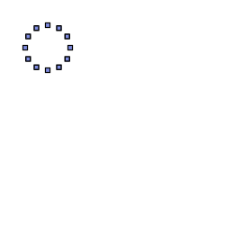

$ cat img-99.xml | ./pppzc.opt - | ./xmgk.opt -
<msl>
<image>
<merge>
<layer>
<new w='250' h='250' rgb='255,255,255' />
<for_circle v='PT' r='25' c='50,50' n='12'>
<draw_rectangle_f pos='%[PT]' dims='5,5' rgba='0,25,195,127' rgb_stroke='0,0,0' stroke_width='1.2' />
</for_circle>
</layer>
</merge>
</image>
</msl>
<- / ->